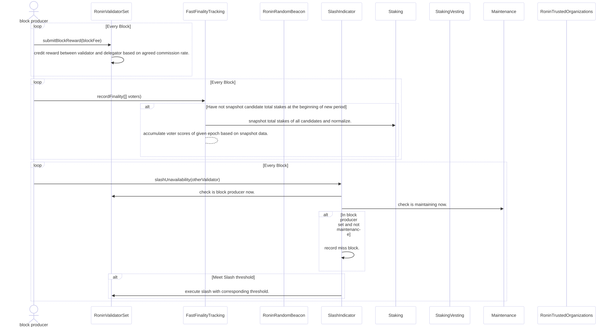
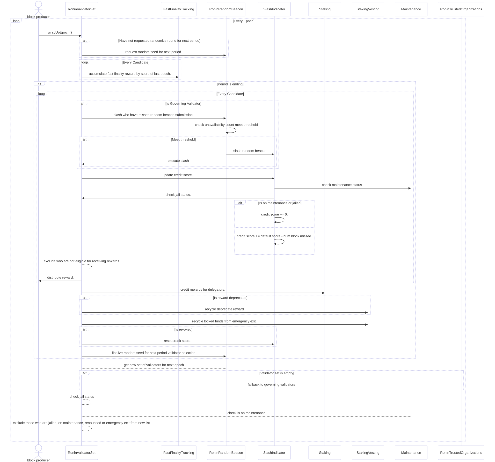

Fast Finality Tracking
The FastFinalityTracking contract is responsible for tracking and scoring validator performance based on their participation in finalizing blocks. This mechanism ensures the reliability of validators by incentivizing active participation and maintaining a secure and efficient network.
Key Responsibilities
-
Tracking Finality Votes:
- Records votes submitted by validators for block finality.
- Keeps a count of finality votes (
qcVoteCount) for each validator in each epoch.
-
Scoring Validators:
- Assigns scores to validators based on the quality of their finality votes and their normalized stake values.
- Scores are calculated dynamically for each epoch to reflect validator performance accurately.
-
Normalizing Stake Data:
- Ensures fair scoring by normalizing staking amounts across all validators.
- Applies a pivot-based normalization to cap excessive stakes and balance scoring metrics.
-
Integration with Epochs and Periods:
- Operates on an epoch-based system to ensure timely and accurate tracking of validator actions.
- Normalized data is updated per period for consistent calculations.
Workflow
1. Recording Finality Votes
- The
recordFinalityfunction is called by the block producer (viablock.coinbase) once per block. - Validators who voted for block finality are recorded.
- Scores are updated for each validator based on:
- Their normalized stake.
- The total normalized stake of voters.
2. Normalization of Stake Values
- Stake values are normalized using the
inplaceFindNormalizedSumAndPivotfunction fromLibArray:- Excessively large stakes are capped to prevent unfair advantages.
- The normalized stake values are stored for future calculations.
3. Scoring Validators
- The scoring formula accounts for:
- Total stake of the validator (including self-stake and delegator stake amounts).
- The validator's normalized stake.
- The total normalized stake of voters.
- The ratio of votes cast to the total possible votes.
- Scores reflect the contribution of each validator to the block finality process.
4. Epoch-Based Tracking
- Votes and scores are tracked for each epoch.
- The
epochOffunction from theRoninValidatorSetcontract is used to determine the current epoch based on the block number.
Data Structure
Tracking Records
_tracker:- Maps each epoch to a list of records for validators.
- Each record includes:
qcVoteCount: The number of finality votes cast by the validator.score: The cumulative score for the validator in the epoch.
Normalized Data
_normalizedData:- Stores normalized stake values for each validator in a period.
- Includes:
normalizedStake: A mapping of validator IDs to their normalized stake values.normalizedSum: The total normalized stake in the period.
Maintenance Overview
The Maintenance contract manages the scheduling, execution, and tracking of maintenance periods for validators in the Ronin network. It ensures that validators can temporarily exit block production without being slashed.
Key Responsibilities
-
Scheduling Maintenance:
- Validators can request maintenance schedules within defined time frames.
- Maintenance schedules are subject to duration, block offset, and maximum schedule constraints.
-
Exiting Maintenance:
- Validators can exit maintenance early, marking the end of their scheduled maintenance period.
- Exiting requires updating the maintenance state and ensuring synchronization.
-
Tracking Maintenance:
- Active maintenance schedules are tracked and synchronized to ensure accurate status updates.
- The contract maintains an up-to-date list of active maintenance schedules.
Workflow
1. Scheduling Maintenance
- A validator requests a maintenance schedule by specifying:
- Start and end blocks within allowed offsets.
- A duration within the defined minimum and maximum maintenance block ranges.
- The system verifies the following:
- Validator is eligible and is the caller's candidate.
- The schedule adheres to constraints.
- No other active schedule exists for the validator.
2. Maintenance Execution
- Validators in maintenance are excluded from block production during their scheduled period.
- The state of maintenance is actively tracked using block ranges and synchronization checks.
3. Exiting Maintenance
- Validators can exit maintenance early by:
- Updating the end block to the current block.
- Synchronizing the maintenance schedule to remove the validator from active lists.
4. Synchronization of Active Schedules
- At each synchronization point:
- The system checks if scheduled maintenance has ended for any validator.
- Validators with expired schedules are removed from the active schedule list.
Integration
The Maintenance contract integrates with the RoninValidatorSet to ensure:
- Validation of maintenance eligibility.
- Removal of validators under maintenance from block production.
RoninRandomBeacon Contract Documentation
The RoninRandomBeacon contract is responsible for generating secure random beacons, managing validator thresholds, and ensuring fair validator selection.
Overview
1. Random Beacon Management
- Handles the lifecycle of random beacon requests, including:
- Requesting a random seed for the next period.
- Validating and finalizing the random seed with cryptographic proofs.
- Storing the finalized beacon value for validator selection.
2. Validator Threshold Management
- Maintains and updates thresholds for different validator types:
- Governing Validators.
- Standard Validators.
- Rotating Validators.
Validator Selection: Filtering Valid Candidates
The RoninRandomBeacon contract ensures that only eligible candidates are included in the validator set. The filtering process applies the following criteria:
-
Exclude Newly Registered Candidates:
- Candidates within the cooldown period are excluded from selection.
- Ensures fairness by preventing immediate participation of new candidates.
-
Enforce Thresholds:
- Valid candidates are filtered based on thresholds defined for each validator type:
- Governing Validators (GV)
- Standard Validators (SV)
- Rotating Validators (RV)
- Valid candidates are filtered based on thresholds defined for each validator type:
-
Sort by Weights and Staking Amounts and Random Seed:
- Governing Validators (GV) are given priority based on their trusted weights.
- Standard Validators (SV) are sorted based on their staking amounts.
- Rotating Validators (RV) are selected based on a random seed.
4. Unavailability Management
- Tracks validator unavailability and enforces slashing penalties when thresholds are exceeded.
Flow
1. Random Seed Request
- At the beginning of a new period, the
RoninValidatorSetcontract requests a random seed. - Validators submit cryptographic proofs to fulfill the request.
2. Random Beacon Finalization
- At the end of the period:
- The random beacon is finalized using the submitted proofs.
- Pending validator IDs are finalized for the next period.
3. Validator Selection
- Finalized random beacon values are used to select validators for the current period and epoch.
- Selected validators are used for promoting to block producer.
4. Unavailability Tracking and Slashing
- Validator activity is monitored throughout the period.
- Validators failing to meet availability thresholds are penalized via slashing.
5. Transition to New Period
- At the end of the each epoch, the contract transitions to a new period with updated validator sets and configurations.
Epoch vs Period
Understanding the distinction between Epoch and Period is critical for grasping the underlying mechanics of the system. Both terms are used to represent time intervals but serve different purposes and are calculated differently.
1. What is an Epoch?
An epoch is a fixed time unit measured in blocks. It represents the core timing mechanism for operations within the blockchain.
- Definition:
- An epoch is defined as a set number of blocks.
- Configuration:
- In this system, 1 epoch = 200 blocks.
- Approximate Duration:
- Each block takes approximately 3 seconds to generate.
- Thus, 1 epoch ≈ 10 minutes.
Example:
- Blocks 0–199 belong to epoch 0.
- Blocks 200–399 belong to epoch 1.
- Blocks 400–599 belong to epoch 2, and so on.
Epochs are used for:
- Validator rotation.
- Slashing mechanisms.
- Reward distribution calculations.
2. What is a Period?
A period is a broader time unit measured in timestamps, typically aligned with calendar days. It serves as a higher-level grouping of epochs.
- Definition:
- A period ideally starts at 00:00 UTC each day.
- Challenges in Blockchain:
- Blockchain works with block numbers, not timestamps, making it difficult to align perfectly with real-world time.
- Instead, the system determines a new period when the timestamp of the current epoch exceeds the next day’s threshold.
Key Notes:
- A period starts between 00:00 UTC → 00:15 UTC, depending on block generation timing.
- Period duration is variable and influenced by network performance.
3. Key Differences
| Feature | Epoch | Period |
|---|---|---|
| Measurement Unit | Number of blocks | Timestamps (real-world time) |
| Duration | Fixed (200 blocks ≈ 10 minutes) | Variable (aligned with calendar) |
| Purpose | Operational tasks (e.g., record stats, validator rotation) | High-level grouping of epochs (e.g., reward distribution, randomization, slashing) |
| Start Condition | Based on block number | Based on UTC timestamp |
4. Interplay Between Epochs and Periods
Periods are determined by epochs, and the transition is triggered as follows:
- At the end of each epoch, the system checks the timestamp of the last block.
- If the timestamp indicates a new calendar day, a new period begins.
- Validator roles, random beacons, and other operations are changed at the period boundary.
Key Implications:
- A period may contain fewer epochs if the network is slow (fewer blocks are produced per day).
- Epoch-based calculations remain deterministic, while period-based calculations adapt to timestamp variability.
5. Practical Example
Consider the following scenario:
- Block production rate: ~1 block per 3 seconds.
- Daily period duration: 24 hours = 86,400 seconds.
- Expected epochs per period: $$\approx (\frac{86,400}{(200 \times 3)} $$
6. Visual Representation
+--------+-----------------------------------------------+-------------------------------------------------------------+
| Period | 1 | 2 |
+========+=======+=========+=========+=====+=============+=============+=============+=============+=====+=============+
| Epoch | 0 | 1 | 2 | ... | 239 | 240 | 241 | 242 | | |
+--------+-------+---------+---------+-----+-------------+-------------+-------------+-------------+-----+-------------+
| Block | 0-199 | 200-399 | 400-599 | ... | 47800-47999 | 48000–48199 | 48200–48399 | 48400–48599 | ... | 95800–95999 |
+--------+-------+---------+---------+-----+-------------+-------------+-------------+-------------+-----+-------------+
In this table:
- Each period consists of multiple epochs.
- Each epoch is defined by a range of block numbers.
- A new period starts when the UTC timestamp exceeds 00:00 UTC.
Epoch vs Period
Understanding the distinction between Epoch and Period is critical for grasping the underlying mechanics of the system. Both terms are used to represent time intervals but serve different purposes and are calculated differently.
1. What is an Epoch?
An epoch is a fixed time unit measured in blocks. It represents the core timing mechanism for operations within the blockchain.
- Definition:
- An epoch is defined as a set number of blocks.
- Configuration:
- In this system, 1 epoch = 200 blocks.
- Approximate Duration:
- Each block takes approximately 3 seconds to generate.
- Thus, 1 epoch ≈ 10 minutes.
Example:
- Blocks 0–199 belong to epoch 0.
- Blocks 200–399 belong to epoch 1.
- Blocks 400–599 belong to epoch 2, and so on.
Epochs are used for:
- Validator rotation.
- Slashing mechanisms.
- Reward distribution calculations.
2. What is a Period?
A period is a broader time unit measured in timestamps, typically aligned with calendar days. It serves as a higher-level grouping of epochs.
- Definition:
- A period ideally starts at 00:00 UTC each day.
- Challenges in Blockchain:
- Blockchain works with block numbers, not timestamps, making it difficult to align perfectly with real-world time.
- Instead, the system determines a new period when the timestamp of the current epoch exceeds the next day’s threshold.
Key Notes:
- A period starts between 00:00 UTC → 00:15 UTC, depending on block generation timing.
- Period duration is variable and influenced by network performance.
3. Key Differences
| Feature | Epoch | Period |
|---|---|---|
| Measurement Unit | Number of blocks | Timestamps (real-world time) |
| Duration | Fixed (200 blocks ≈ 10 minutes) | Variable (aligned with calendar) |
| Purpose | Operational tasks (e.g., record stats, validator rotation) | High-level grouping of epochs (e.g., reward distribution, randomization, slashing) |
| Start Condition | Based on block number | Based on UTC timestamp |
4. Interplay Between Epochs and Periods
Periods are determined by epochs, and the transition is triggered as follows:
- At the end of each epoch, the system checks the timestamp of the last block.
- If the timestamp indicates a new calendar day, a new period begins.
- Validator roles, random beacons, and other operations are changed at the period boundary.
Key Implications:
- A period may contain fewer epochs if the network is slow (fewer blocks are produced per day).
- Epoch-based calculations remain deterministic, while period-based calculations adapt to timestamp variability.
5. Practical Example
Consider the following scenario:
- Block production rate: ~1 block per 3 seconds.
- Daily period duration: 24 hours = 86,400 seconds.
- Expected epochs per period: $$\approx (\frac{86,400}{(200 \times 3)} $$
6. Visual Representation
+--------+-----------------------------------------------+-------------------------------------------------------------+
| Period | 1 | 2 |
+========+=======+=========+=========+=====+=============+=============+=============+=============+=====+=============+
| Epoch | 0 | 1 | 2 | ... | 239 | 240 | 241 | 242 | | |
+--------+-------+---------+---------+-----+-------------+-------------+-------------+-------------+-----+-------------+
| Block | 0-199 | 200-399 | 400-599 | ... | 47800-47999 | 48000–48199 | 48200–48399 | 48400–48599 | ... | 95800–95999 |
+--------+-------+---------+---------+-----+-------------+-------------+-------------+-------------+-----+-------------+
In this table:
- Each period consists of multiple epochs.
- Each epoch is defined by a range of block numbers.
- A new period starts when the UTC timestamp exceeds 00:00 UTC.
Roles Explained
This document explains the key roles in the Delegated Proof of Stake (DPoS) system, with a focus on validators, their responsibilities, and the hierarchical structure within the Ronin network.
1. Candidate
Definition
- A candidate is an entity that applies to become a validator.
- Candidates must meet specific requirements, such as staking a minimum amount of tokens.
- Candidates hold specific data:
admin: The address used for rotating the consensus address and other information, identical to the treasury address.treasury: The address to receive rewards, identical to the admin address.governor: Used for voting on proposals; only governing validators have this information.commissionRate: The percentage of rewards the validator shares with their delegators.pubKeyHash: Hash of the public key used to vote for finality.vrfKeyHash: Hash of the VRF key used to submit random seeds; only governing validators have this information.
Responsibilities
- Maintain their staking balance to remain eligible for promotion.
- Await selection to join the validator set.
- Submit fast finality proofs to finalize blocks.
Process
- A user applies to become a candidate by calling the
applyValidatorCandidatefunction in the smart contract. - Eligible candidates may be promoted to validator status.
2. Validator
Definition
- A validator is a candidate that has been selected to participate in block production and governance of the network.
- Validators are divided into three types:
- Governing Validators (GV): Trusted entities with governance privileges.
- Standard Validators (SV): Selected based on their staking amounts.
- Rotating Validators (RV): Temporarily promoted validators selected randomly for fairness.
Types of Validators
1. Governing Validators (GV)
- Role: Act as core participants in network governance and block production.
- Selection: Chosen based on predefined trusted organization weights.
- Special Privileges:
- Submit VRF proofs to generate random seeds.
- Participate in voting for proposals and changes to network parameters.
- Maintain a public
vrfKeyHashandgovernoraddress for governance.
2. Standard Validators (SV)
- Role: Provide block production support with no governance privileges.
- Selection: Chosen based on staking amounts from the top-ranked candidates after governing validators.
- Special Privileges:
- Contribute to block production.
- Earn rewards from transaction fees and block rewards.
- Limitation: Excluded from voting on governance proposals.
3. Rotating Validators (RV)
- Role: Promote decentralization by allowing temporary participation.
- Selection:
- Randomly selected from the remaining candidates after GV and SV are assigned.
- Determined by the random seed generated during beacon finalization.
- Special Privileges:
- Participate in block production during assigned epochs.
- Limitation:
- Rotation occurs periodically; their validator status is not permanent.
Responsibilities of Validators
- Block Production:
- Validate and include transactions in blocks.
- Produce blocks during assigned epochs.
- Finality Proofs:
- All candidates, including non-block producers, contribute fast finality proofs to finalize blocks.
- Compliance:
- Maintain active participation to avoid penalties or slashing.
- Ensure sufficient staking to retain validator status.
3. Block Producer
Definition
- A block producer is a validator assigned to create blocks during a specific epoch.
Responsibilities
- Validate transactions and include them in new blocks.
Key Points
- Block producers are a subset of validators assigned to create blocks during specific epochs.
- All candidates (not just block producers) are responsible for submitting finality proofs.
4. Delegator
Definition
- A delegator is a token holder who stakes their tokens with a validator.
- Delegators share in validator rewards and indirectly influence governance by supporting specific validators.
Reward Sharing
- Rewards are distributed based on:
- Validator's commission rate.
- Delegator's staked amount.
5. Hierarchical Relationship
Structure
- Candidates: The initial pool of participants awaiting promotion.
- Validators:
- Governing Validators (GV): Trusted and responsible for governance and block production.
- Standard Validators (SV): Support block production without governance roles.
- Rotating Validators (RV): Temporarily promoted to encourage decentralization.
- Block Producers: A subset of validators responsible for creating blocks during specific epochs.
- Delegators: Stake tokens with validators to share in rewards and indirectly support the network.
Block Based Operations

Block Based Operations
Epoch Based Operations
